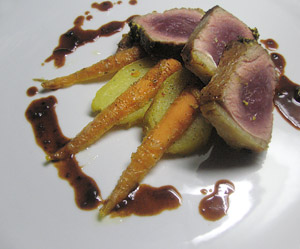

Entrecote double mit Pfefferkruste
5 von 6Kartoffeln: Vier Salzhäufchen auf ein Blech geben, flach drücken und die Kartoffeln darauf setzen. Im auf 200 °C vorgeheizten Backofen weich garen und auskühlen lassen. Schälen, längs in 1 cm dicke Scheiben schneiden und kühl stellen. Die Scheiben im Öl auf beiden Seiten anbraten. Butter, Rosmarin und Knoblauch zugeben und bei kleiner Hitze goldgelb braten. Mit Salz und Pfeffer würzen und mit wenig Zitronenschale abschmecken.
Karotten: In Salzwasser knackig garen, abtropfen lassen und trocken tupfen. Butter und Zucker schmelzen. Karotten zugeben und im auf 180 °C vorgeheizten Backofen karamellisieren (ca. 12 Min.). Kurz vor Garzeitende mit Salz und Pfeffer würzen, mit Honig beträufeln und mit Koriander bestreuen.
Entrecôte: Das Fleisch (ca. 400 Gramm) mit Salz und Pfeffer würzen und im Öl auf beiden Seiten ca. 1 Min. kräftig anbraten. Oberseite mit Senf bestreichen, die Pfeffermischung darauf geben und andrücken. Butter zugeben, zergehen lassen und über das Entrecôte löffeln. Im auf 180 °C vorgeheizten Backofen ca. 6 Min. garen und warm stellen. Kurz vor dem Servieren quer in 1 cm dicke Scheiben schneiden.
Jus: Aus der Pfanne, in der das Fleisch gebraten wurde, das Fett abgiessen und die Schalotten in der Butter andünsten. Rosmarin zugeben und mit dem Wein ablöschen. Bei kleiner Hitze auf 1 dl einkochen. 2.5 Dl Kalbsfond zugeben und auf die Hälfte einkochen. Durch ein feines Sieb giessen, mit wenig Butter binden und mit Salz und Pfeffer abschmecken.
